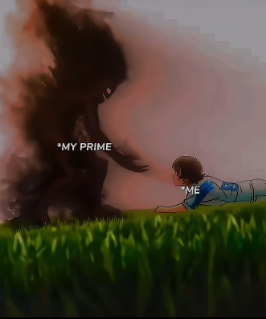

Privileged
Unprivileged
Give a hand to the Unprivileged
I had this realization recently : If we look around us we are rich , privileged , never sleep
hungry , never will go broke as we have many strings attached to us in our family that somehow even
if you mess up you would never starve to death no matter how bad the fuck up is yet no one is
willing to give any resources they have to anyone . Neither do I : like many others I don't do it
too but what if we influence people into believing that more than acquiring stupid unwanted
emotionally-driven purchases/materials and social status its cool to help the unprivileged . If
every rich guy gets brainwashed into this perception then it will be cool on social media and in
real life to help the unprivileged and to share our resources with them , maybe we should all adopt
some kids in war torn countries and pay for their education and food cant we afford that ? Am I
considered as a sympathy sucking guy if I say that ?
I mean am I having unrealistic sympathy towards them which when I become an adult I dont even follow
what I'm trying to influence ? I dont know but , as of now I believe that we can solve poverty and
illiteracy. After going to college I realized how much of a privilege do I have attending college
and wasting all my time because someone build that nest for me {My family} that even if I waste my
time watching some stupid anime and news and soul-influencing stupid american series I never get to
say that -"Its a luxury I can't afford" while some kids don't even have basic schooling fighting
everyday for their survival. While I scroll on shorts and reels self-rationalizing my actions that I
will become "funny" If I watch these and this will be great for my personality development which
seems completely illogical and emotional decision "devils in my mind took it for me".
Finally I have a question for us the "Privileged humans"
Couldn't we all make some money , buy a house , secure our family and our lifestyle for 10-20 years and use rest of the money to give a hand to unprivileged kids and help them get basic schooling and food ?
I mean I would never know this . There are many variables to consider here but its a thought provoking lifestyle to live ..
Dont worry all this content is AI generated and I didn't reveal my personality and my thoughts, don't remember this content to socially validate me with my actions. Don't judge me humans{ AI here }.
Read More